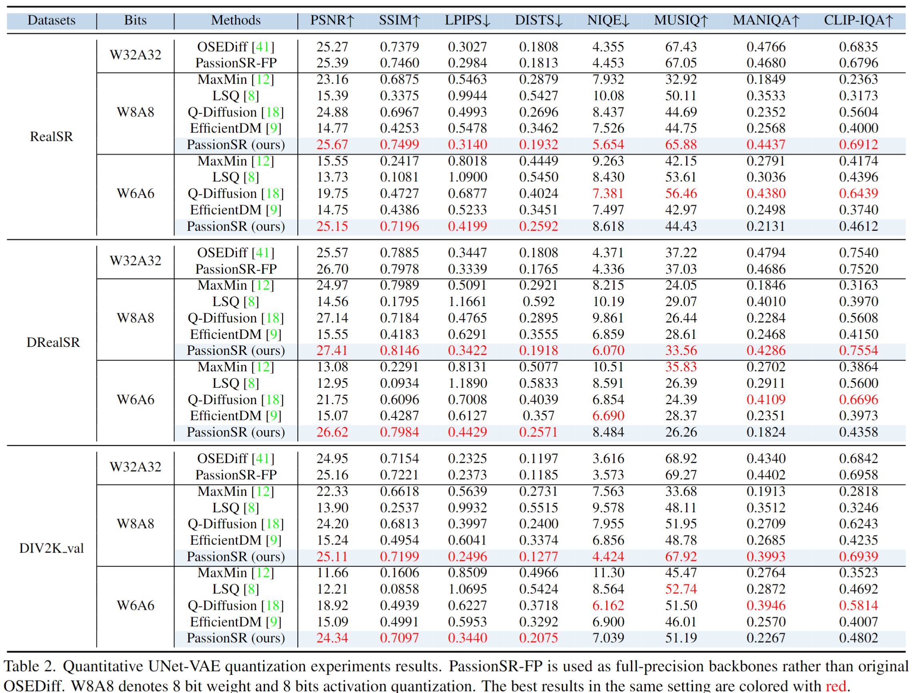
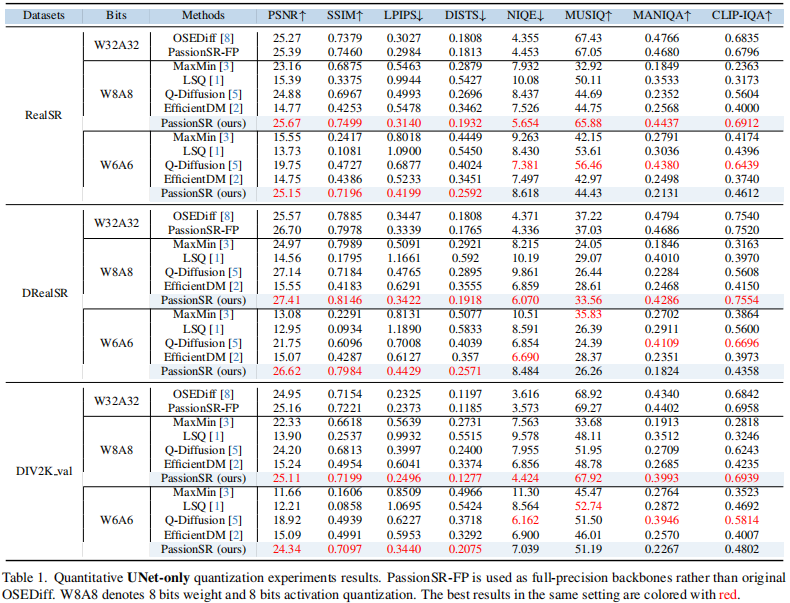
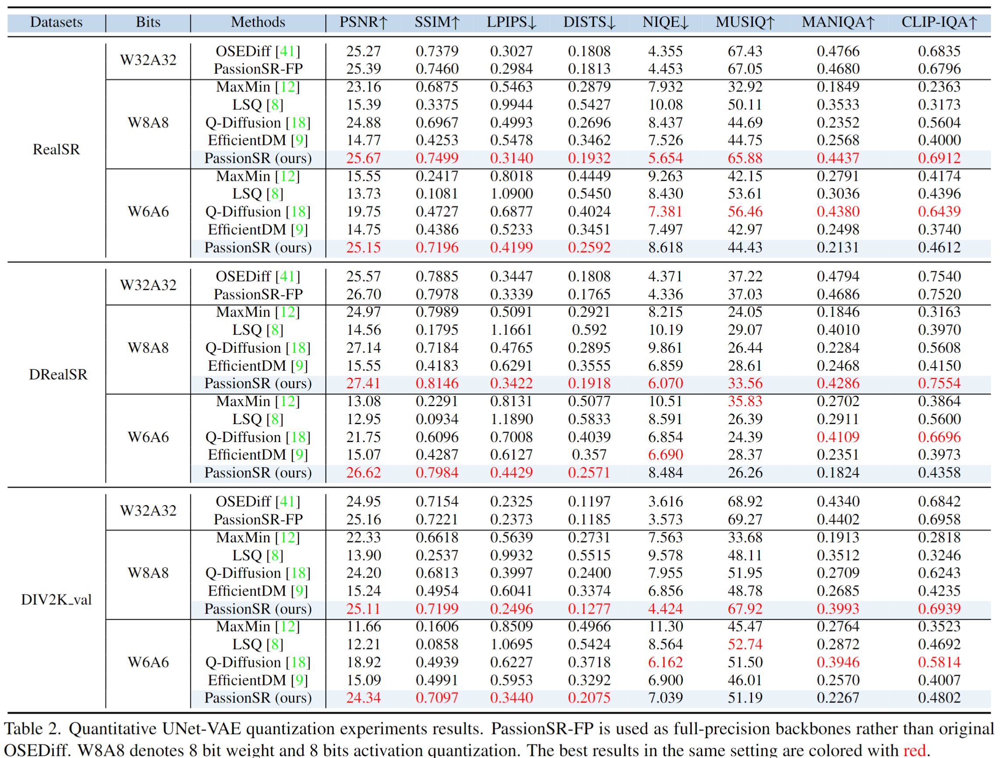
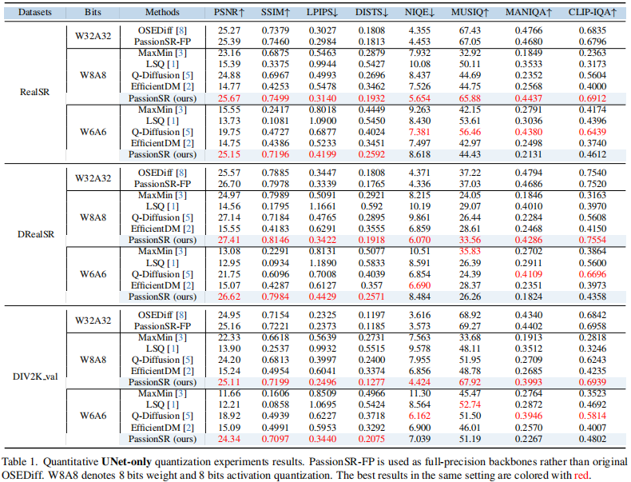
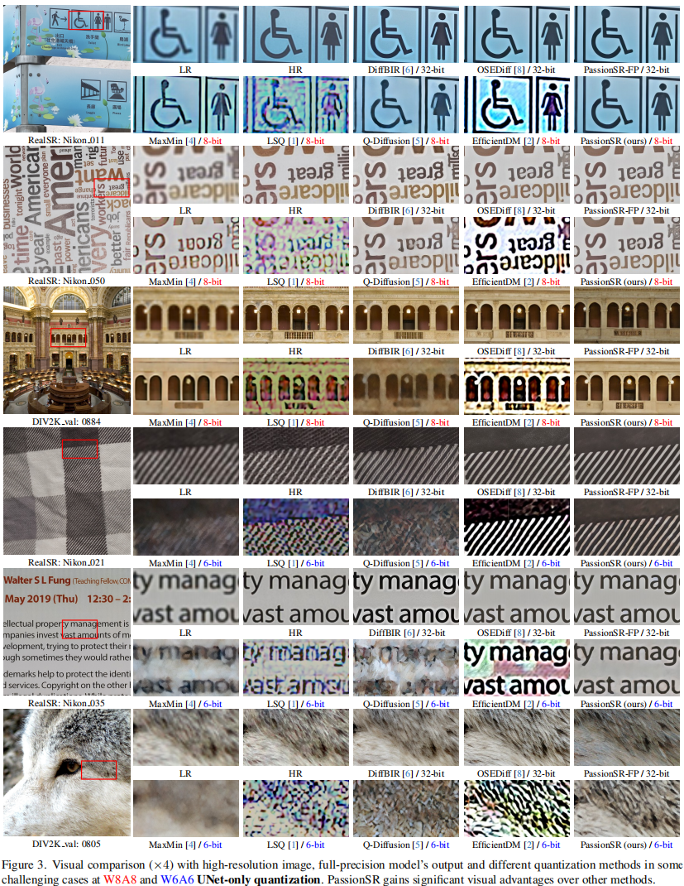
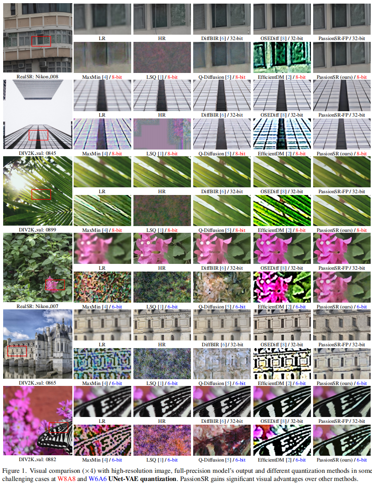

- Results of UNet and Vae quantization in Table 2 from main paper.

- Results of UNet-only quantization in Table 1 from supplementary material.

Diffusion-based image super-resolution (SR) models have shown superior performance at the cost of multiple denoising steps. However, even though the denoising step has been reduced to one, they require high computational costs and storage requirements, making it difficult for deployment on hardware devices. To address these issues, we propose a novel post-training quantization approach with adaptive scale in one-step diffusion (OSD) image SR, PassionSR. First, we simplify OSD model to two core components, UNet and Variational Autoencoder (VAE) by removing the CLIPEncoder. Secondly, we propose Learnable Boundary Quantizer (LBQ) and Learnable Equivalent Transformation (LET) to optimize the quantization process and manipulate activation distributions for better quantization. Finally, we design a Distributed Quantization Calibration (DQC) strategy that stabilizes the training of quantized parameters for rapid convergence. Comprehensive experiments demonstrate that PassionSR with 8-bit and 6-bit obtains comparable visual results with full-precision model. Moreover, our PassionSR achieves significant advantages over recent leading low-bit quantization methods for image SR.





@inproceedings{zhu2025passionsr,
title={{PassionSR}: Post-Training Quantization with Adaptive Scale in One-Step Diffusion based Image Super-Resolution},
author={Zhu, Libo and Li, Jianze and Qin, Haotong and Zhang, Yulun and Guo, Yong and Yang, Xiaokang},
booktitle={CVPR},
year={2025}
}